NCERT Solutions for Class 12 Maths Chapter 7 Integrals
The topics and sub-topics included in the Integrals chapter are the following:
| Section Name | Topic Name |
| 7 | Integrals |
| 7.1 | Introduction |
| 7.2 | Integration as an Inverse Process of Differentiation |
| 7.3 | Methods of Integration |
| 7.4 | Integrals of some Particular Functions |
| 7.5 | Integration by Partial Fractions |
| 7.6 | Integration by Parts |
| 7.7 | Definite Integral |
| 7.8 | Fundamental Theorem of Calculus |
| 7.9 | Evaluation of Definite Integrals by Substitution |
| 7.10 | Some Properties of Definite Integrals |
NCERT Solutions for Class 12 Maths Chapter 7 Integrals: Engineering aspirants and students appearing for CBSE Class 12 board exams must take the NCERT Mathematics textbooks seriously and finish them from top to bottom. They must also go through the NCERT solutions for Class 12 Maths and Class 11 Maths to have a better understanding of the various concepts. In this article, we will provide you with NCERT Solutions for Class 12 Maths Chapter 7 – Integrals which have been designed by the best teachers in India.
Free download NCERT Solutions for Class 12 Maths Chapter 7 Exercise 7.11, Ex 7.10, Ex 7.9, Ex 7.8, Ex 7.7, Ex 7.6, Ex 7.5, Ex 7.4, Ex 7.3, Ex 7.2, Ex 7.1 Integrals PDF in Hindi Medium as well as in English Medium for CBSE, Uttarakhand, Bihar, MP Board, Gujarat Board, BIE, Intermediate and UP Board students, who are using NCERT Books based on updated CBSE Syllabus for the session 2019-20.
- Integration Formulas
- Integrals Class 12 Ex 7.1
- Integrals Class 12 Ex 7.1 in Hindi Medium
- Integrals Class 12 Ex 7.2
- Integrals Class 12 Ex 7.2 in Hindi Medium
- Integrals Class 12 Ex 7.3
- Integrals Class 12 Ex 7.3 in Hindi Medium
- Integrals Class 12 Ex 7.4
- Integrals Class 12 Ex 7.4 in Hindi Medium
- Integrals Class 12 Ex 7.5
- Integrals Class 12 Ex 7.5 in Hindi Medium
- Integrals Class 12 Ex 7.6
- Integrals Class 12 Ex 7.6 in Hindi Medium
- Integrals Class 12 Ex 7.7
- Integrals Class 12 Ex 7.7 in Hindi Medium
- Integrals Class 12 Ex 7.8
- Integrals Class 12 Ex 7.8 in Hindi Medium
- Integrals Class 12 Ex 7.9
- Integrals Class 12 Ex 7.9 in Hindi Medium
- Integrals Class 12 Ex 7.10
- Integrals Class 12 Ex 7.10 in Hindi Medium
- Integrals Class 12 Ex 7.11
- Integrals Class 12 Ex 7.11 in Hindi Medium
- Integrals Class 12 Miscellaneous Exercise
- RD Sharma Class 12 Integrals
- NCERT Exemplar Class 12 Maths Integrals
- Integrals Class 12 Notes Maths Chapter 7
- Important Questions Class 12 Maths Integrals
- JEE Main Mathematics Definite and Indefinite Integrals
Class 12 Maths Chapter 7 NCERT Solutions Integrals
NCERT Solutions for Class 12 Maths Chapter 7 – Integrals contains step-by-step and detailed solutions for every question.
- Introduction
- Integration as an Inverse Process of Differentiation
- Geometrical interpretation of indefinite integral
- Some properties of indefinite integral
- Comparison between differentiation and integration
- Methods of Integration
- Integration by substitution
- Integration using trigonometric identities
- Integrals of Some Particular Functions
- Integration by Partial Fractions
- Integration by Parts
- Integral of the type
- Integrals of some more types
- Definite Integral
- Definite integral as the limit of a sum
- Fundamental Theorem of Calculus
- Area function
- First fundamental theorem of integral calculus
- Second fundamental theorem of integral calculus
- Evaluation of Definite Integrals by Substitution
- Some Properties of Definite Integrals
Integrals Ex 7.1 Class 12
Ex 7.1 Class 12 Maths Question 1.
sin 2x
Solution:
Ex 7.1 Class 12 Maths Question 2.
cos 3x
Solution:
Ex 7.1 Class 12 Maths Question 3.
\({ e }^{ 2x }\)
Solution:
Ex 7.1 Class 12 Maths Question 4.
(ax + c)²
Solution:
Ex 7.1 Class 12 Maths Question 5.
\({ sin\quad 2x-4e }^{ 3x }\)
Ex 7.1 Class 12 Maths Solution:
Find the following integrals in Exercises 6 to 20 :
Ex 7.1 Class 12 Maths Question 6.
\(\int { \left( { 4e }^{ 3x }+1 \right) dx } \)
Solution:
Ex 7.1 Class 12 Maths Question 7.
\(\int { { x }^{ 2 }\left( 1-\frac { 1 }{ { x }^{ 2 } } \right) dx } \)
Solution:
Ex 7.1 Class 12 Maths Question 8.
\(\int { { (ax }^{ 2 }+bx+c)dx } \)
Solution:
Ex 7.1 Class 12 Maths Question 9.
\(\int { \left( { 2x }^{ 2 }+{ e }^{ x } \right) dx } \)
Solution:
Ex 7.1 Class 12 Maths Question 10.
\(\int { { \left[ \sqrt { x } -\frac { 1 }{ \sqrt { x } } \right] }^{ 2 }dx } \)
Solution:
Ex 7.1 Class 12 Maths Question 11.
\(\int { \frac { { x }^{ 3 }+{ 5x }^{ 2 }-4 }{ { x }^{ 2 } } dx } \)
Solution:
Ex 7.1 Class 12 Maths Question 12.
\(\int { \frac { { x }^{ 3 }+3x+4 }{ \sqrt { x } } dx } \)
Solution:
Ex 7.1 Class 12 Maths Question 13.
\(\int { \frac { { x }^{ 3 }-{ x }^{ 2 }+x-1 }{ x-1 } dx } \)
Solution:
Ex 7.1 Class 12 Maths Question 14.
\(\int { \left( 1-x \right) \sqrt { x } dx } \)
Solution:
Ex 7.1 Class 12 Maths Question 15.
\(\int { \sqrt { x } \left( { 3x }^{ 2 }+2x+3 \right) dx } \)
Solution:
Ex 7.1 Class 12 Maths Question 16.
\(\int { (2x-3cosx+{ e }^{ x })dx } \)
Solution:
Ex 7.1 Class 12 Maths Question 17.
\(\int { \left( { 2x }^{ 2 }-3sinx+5\sqrt { x } \right) dx } \)
Solution:
Ex 7.1 Class 12 Maths Question 18.
\(\int { secx(secx+tanx)dx } \)
Solution:
Ex 7.1 Class 12 Maths Question 19.
\(\int { \frac { { sec }^{ 2 }x }{ { cosec }^{ 2 }x } dx } \)
Solution:

Ex 7.1 Class 12 Maths Question 20.
\(\int { \frac { 2-3sinx }{ { cos }^{ 2 }x } dx } \)
Solution:
Choose the correct answer in Exercises 21 and 22.
Ex 7.1 Class 12 Maths Question 21.
The antiderivative \(\left( \sqrt { x } +\frac { 1 }{ \sqrt { x } } \right) \) equals
(a) \(\frac { 1 }{ 3 } { x }^{ \frac { 1 }{ 3 } }+{ 2x }^{ \frac { 1 }{ 2 } }+c\)
(b) \(\frac { 2 }{ 3 } { x }^{ \frac { 2 }{ 3 } }+{ \frac { 1 }{ 2 } x }^{ 2 }+c\)
(c) \(\frac { 2 }{ 3 } { x }^{ \frac { 3 }{ 2 } }+{ 2x }^{ \frac { 1 }{ 2 } }+c\)
(d) \(\frac { 3 }{ 2 } { x }^{ \frac { 3 }{ 2 } }+\frac { 1 }{ 2 } { x }^{ \frac { 1 }{ 2 } }+c\)
Solution:
Ex 7.1 Class 12 Maths Question 22.
If \(\frac { d }{ dx } f(x)={ 4x }^{ 3 }-\frac { 3 }{ { x }^{ 4 } } \) such that f(2)=0 then f(x) is
(a) \({ x }^{ 4 }+\frac { 1 }{ { x }^{ 3 } } -\frac { 129 }{ 8 } \)
(b) \({ x }^{ 3 }+\frac { 1 }{ { x }^{ 4 } } +\frac { 129 }{ 8 } \)
(c) \({ x }^{ 4 }+\frac { 1 }{ { x }^{ 3 } } +\frac { 129 }{ 8 } \)
(d) \({ x }^{ 3 }+\frac { 1 }{ { x }^{ 4 } } -\frac { 129 }{ 8 } \)
Solution:
Move to Top → Class 12 Integrals Chapter 7
Integrals Ex 7.2 Class 12
Integrate the functions in Exercises 1 to 37:
Ex 7.2 Class 12 Maths Question 1.
\(\frac { 2x }{ 1+{ x }^{ 2 } } \)
Solution:
Ex 7.2 Class 12 Maths Question 2.
\(\frac { { \left( logx \right) }^{ 2 } }{ x } \)
Solution:
Ex 7.2 Class 12 Maths Question 3.
\(\frac { 1 }{ x+xlogx } \)
Solution:
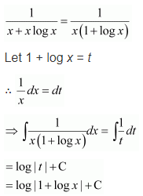
Ex 7.2 Class 12 Maths Question 4.
sinx sin(cosx)
Solution:
Ex 7.2 Class 12 Maths Question 5.
sin(ax+b) cos(ax+b)
Solution:
Ex 7.2 Class 12 Maths Question 6.
\(\sqrt { ax+b } \)
Solution:
Ex 7.2 Class 12 Maths Question 7.
\(x\sqrt { x+2 } \)
Solution:
Ex 7.2 Class 12 Maths Question 8.
\(x\sqrt { 1+{ 2x }^{ 2 } } \)
Solution:
Ex 7.2 Class 12 Maths Question 9.
\((4x+2)\sqrt { { x }^{ 2 }+x+1 } \)
Solution:
Ex 7.2 Class 12 Maths Question 10.
\(\frac { 1 }{ x-\sqrt { x } } \)
Solution:
Ex 7.2 Class 12 Maths Question 11.
\(\frac { x }{ \sqrt { x+4 } } ,x>0\)
Solution:
Ex 7.2 Class 12 Maths Question 12.
\({ { (x }^{ 3 }-1) }^{ \frac { 1 }{ 3 } }.{ x }^{ 5 }\)
Solution:
Ex 7.2 Class 12 Maths Question 13.
\(\frac { { x }^{ 2 } }{ { { (2+3x }^{ 3 }) }^{ 3 } } \)
Solution:
Ex 7.2 Class 12 Maths Question 14.
\(\frac { 1 }{ x(logx)^{ m } } ,x>0\)
Solution:
Ex 7.2 Class 12 Maths Question 15.
\(\frac { x }{ 9-4{ x }^{ 2 } } \)
Solution:
Ex 7.2 Class 12 Maths Question 16.
\({ e }^{ 2x+3 }\)
Solution:
Ex 7.2 Class 12 Maths Question 17.
\(\frac { x }{ { e }^{ { x }^{ 2 } } } \)
Solution:
Ex 7.2 Class 12 Maths Question 18.
\(\frac { { e }^{ { tan }^{ -1 }x } }{ 1+{ x }^{ 2 } } \)
Solution:
Ex 7.2 Class 12 Maths Question 19.
\(\frac { { e }^{ 2x }-1 }{ { e }^{ 2x }+1 } \)
Solution:
Ex 7.2 Class 12 Maths Question 20.
\(\frac { { e }^{ 2x }-{ e }^{ 2x } }{ { e }^{ 2x }+{ e }^{ -2x } } \)
Solution:
Ex 7.2 Class 12 Maths Question 21.
tan²(2x-3)
Solution:
∫tan²(2x-3)dx = ∫[sec²(2x-3)-1]dx = I
put 2x-3 = t
so that 2dx = dt
I = \(\frac { 1 }{ 2 }\) ∫sec²t dt-x+c
= \(\frac { 1 }{ 2 }t-x+c\)
= \(\frac { 1 }{ 2 }tan(2x-3)-x+c\)
Ex 7.2 Class 12 Maths Question 22.
sec²(7-4x)
Solution:
Ex 7.2 Class 12 Maths Question 23.
\(\frac { { sin }^{ -1 }x }{ \sqrt { 1-{ x }^{ 2 } } } \)
Solution:
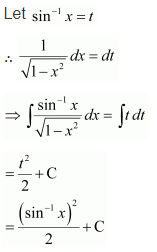
Ex 7.2 Class 12 Maths Question 24.
\(\frac { 2cosx-3sinx }{ 6cosx+4sinx }\)
Solution:
Ex 7.2 Class 12 Maths Question 25.
\(\frac { 1 }{ { cos }^{ 2 }x{ (1-tanx) }^{ 2 } } \)
Solution:

Ex 7.2 Class 12 Maths Question 26.
\(\frac { cos\sqrt { x } }{ \sqrt { x } } \)
Solution:
Ex 7.2 Class 12 Maths Question 27.
\(\sqrt { sin2x } cos2x\)
Solution:
Ex 7.2 Class 12 Maths Question 28.
\(\frac { cosx }{ \sqrt { 1+sinx } } \)
Solution:
Ex 7.2 Class 12 Maths Question 29.
cotx log sinx
Solution:
Ex 7.2 Class 12 Maths Question 30.
\(\frac { sinx }{ 1+cosx }\)
Solution:
Ex 7.2 Class 12 Maths Question 31.
\(\frac { sinx }{ { (1+cosx) }^{ 2 } } \)
Solution:
Ex 7.2 Class 12 Maths Question 32.
\(\frac { 1 }{ 1+cotx }\)
Solution:
Ex 7.2 Class 12 Maths Question 33.
\(\frac { 1 }{ 1-tanx }\)
Solution:
Ex 7.2 Class 12 Maths Question 34.
\(\frac { \sqrt { tanx } }{ sinxcosx } \)
Solution:
Ex 7.2 Class 12 Maths Question 35.
\(\frac { { (1+logx) }^{ 2 } }{ x } \)
Solution:
Ex 7.2 Class 12 Maths Question 36.
\(\frac { (x+1){ (x+logx) }^{ 2 } }{ x } \)
Solution:
Ex 7.2 Class 12 Maths Question 37.
\(\frac { { x }^{ 3 }sin({ tan }^{ -1 }{ x }^{ 4 }) }{ 1+{ x }^{ 8 } } dx \)
Solution:

Choose the correct answer in exercises 38 and 39
Ex 7.2 Class 12 Maths Question 38.
\(\int { \frac { { 10x }^{ 9 }+{ 10 }^{ x }log{ e }^{ 10 } }{ { x }^{ 10 }+{ 10 }^{ x } } dx } \)
(a) 10x – x10 + C
(b) 10x + x10 + C
(c) (10x – x10) + C
(d) log (10x + x10) + C
Solution:
Ex 7.2 Class 12 Maths Question 39.
\(\int { \frac { dx }{ { sin }^{ 2 }x{ \quad cos }^{ 2 }x } = } \)
(a) tanx + cotx + c
(b) tanx – cotx + c
(c) tanx cotx + c
(d) tanx – cot2x + c
Solution:
Move to Top → Class 12 Integrals Chapter 7
Integrals Ex 7.3 Class 12
Find the integrals of the functions in Exercises 1 to 22.
Ex 7.3 Class 12 Maths Question 1.
sin²(2x+5)
Solution:
Ex 7.3 Class 12 Maths Question 2.
sin3x cos4x
Solution:
Ex 7.3 Class 12 Maths Question 3.
∫cos2x cos4x cos6x dx
Solution:
Ex 7.3 Class 12 Maths Question 4.
∫sin3(2x+1)dx
Solution:
Ex 7.3 Class 12 Maths Question 5.
sin3x cos3x
Solution:
Ex 7.3 Class 12 Maths Question 6.
sinx sin2x sin3x
Solution:
Ex 7.3 Class 12 Maths Question 7.
sin 4x sin 8x
Solution:
Ex 7.3 Class 12 Maths Question 8.
\(\frac { 1-cosx }{ 1+cosx }\)
Solution:
Ex 7.3 Class 12 Maths Question 9.
\(\frac { cosx }{ 1+cosx }\)
Solution:
Ex 7.3 Class 12 Maths Question 10.
∫sinx4 dx
Solution:

Ex 7.3 Class 12 Maths Question 11.
cos4 2x
Solution:
Ex 7.3 Class 12 Maths Question 12.
\(\frac { { sin }^{ 2 }x }{ 1+cosx } \)
Solution:
Ex 7.3 Class 12 Maths Question 13.
\(\frac { cos2x-cos2\alpha }{ cosx-cos\alpha } \)
Solution:
Ex 7.3 Class 12 Maths Question 14.
\(\frac { cosx-sinx }{ 1+sin2x }\)
Solution:
Ex 7.3 Class 12 Maths Question 15.
\(\int { { tan }^{ 3 }2x\quad sec2x\quad dx=I } \)
Solution:
Ex 7.3 Class 12 Maths Question 16.
tan4x
Solution:
Ex 7.3 Class 12 Maths Question 17.
\(\frac { { sin }^{ 3 }x+{ cos }^{ 3 }x }{ { sin }^{ 2 }x{ cos }^{ 2 }x } \)
Solution:
Ex 7.3 Class 12 Maths Question 18.
\(\frac { cos2x+{ 2sin }^{ 2 }x }{ { cos }^{ 2 }x } \)
Solution:
Ex 7.3 Class 12 Maths Question 19.
\(\frac { 1 }{ sinx{ cos }^{ 3 }x } \)
Solution:
Ex 7.3 Class 12 Maths Question 20.
\(\frac { cos2x }{ { (cosx+sinx) }^{ 2 } } \)
Solution:
Ex 7.3 Class 12 Maths Question 21.
sin-1 (cos x)
Solution:
Ex 7.3 Class 12 Maths Question 22.
\(\int { \frac { 1 }{ cos(x-a)cos(x-b) } dx } \)
Solution:
Ex 7.3 Class 12 Maths Question 23.
\(\int { \frac { { sin }^{ 2 }x-{ cos }^{ 2 }x }{ { sin }^{ 2 }x{ cos }^{ 2 }x } } dx\quad is\quad equal\quad to\)
(a) tanx+cotx+c
(b) tanx+cosecx+c
(c) -tanx+cotx+c
(d) tanx+secx+c
Solution:
Ex 7.3 Class 12 Maths Question 24.
\(\int { \frac { e^{ x }(1+x) }{ cos^{ 2 }({ e }^{ x }.{ x }) } } dx\quad is\quad equal\quad to\)
(a) -cot(e.xx)+c
(b) tan(xex)+c
(c) tan(ex)+c
(d) cot ex+c
Solution:
Move to Top → Class 12 Integrals Chapter 7
Integrals Class 12 Ex 7.4
Ex 7.4 Class 12 Maths Question 1.
\(\frac { { 3x }^{ 2 } }{ { x }^{ 6 }+1 } \)
Solution:
Ex 7.4 Class 12 Maths Question 2.
\(\frac { 1 }{ \sqrt { 1+{ 4x }^{ 2 } } } \)
Solution:
Ex 7.4 Class 12 Maths Question 3.
\(\frac { 1 }{ \sqrt { { (2-x) }^{ 2 }+1 } } \)
Solution:
Ex 7.4 Class 12 Maths Question 4.
\(\frac { 1 }{ \sqrt { 9-{ 25x }^{ 2 } } } \)
Solution:
Ex 7.4 Class 12 Maths Question 5.
\(\frac { 3x }{ 1+{ 2x }^{ 4 } } \)
Solution:
Ex 7.4 Class 12 Maths Question 6.
\(\frac { { x }^{ 2 } }{ 1-{ x }^{ 6 } } \)
Solution:
Ex 7.4 Class 12 Maths Question 7.
\(\frac { x-1 }{ \sqrt { { x }^{ 2 }-1 } } \)
Solution:

Ex 7.4 Class 12 Maths Question 8.
\(\frac { { x }^{ 2 } }{ \sqrt { { x }^{ 6 }+{ a }^{ 6 } } } \)
Solution:
Ex 7.4 Class 12 Maths Question 9.
\(\frac { { sec }^{ 2 }x }{ \sqrt { { tan }^{ 2 }x+4 } } \)
Solution:
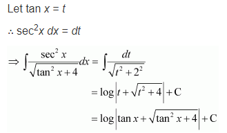
Ex 7.4 Class 12 Maths Question 10.
\(\frac { 1 }{ \sqrt { { x }^{ 2 }+2x+2 } } \)
Solution:
Ex 7.4 Class 12 Maths Question 11.
\(\frac { 1 }{ { 9x }^{ 2 }+6x+5 } \)
Solution:
Ex 7.4 Class 12 Maths Question 12.
\(\frac { 1 }{ \sqrt { 7-6x-{ x }^{ 2 } } } \)
Solution:
Ex 7.4 Class 12 Maths Question 13.
\(\frac { 1 }{ \sqrt { (x-1)(x-2) } } \)
Solution:
Ex 7.4 Class 12 Maths Question 14.
\(\frac { 1 }{ \sqrt { 8+3x-{ x }^{ 2 } } } \)
Solution:
Ex 7.4 Class 12 Maths Question 15.
\(\frac { 1 }{ \sqrt { (x-a)(x-b) } } \)
Solution:

Ex 7.4 Class 12 Maths Question 16.
\(\frac { 4x+1 }{ \sqrt { { 2x }^{ 2 }+x-3 } } \)
Solution:
Ex 7.4 Class 12 Maths Question 17.
\(\frac { x+2 }{ \sqrt { { x }^{ 2 }-1 } } \)
Solution:
Ex 7.4 Class 12 Maths Question 18.
\(\frac { 5x-2 }{ 1+2x+{ 3x }^{ 2 } } \)
Solution:
put 5x-2=A\(\frac { d }{ dx }\)(1+2x+3x²)+B
⇒ 6A=5, A=\(\frac { 5 }{ 6 }-2=2A+B\), B=\(-\frac { 11 }{ 3 }\)
Ex 7.4 Class 12 Maths Question 19.
\(\frac { 6x+7 }{ \sqrt { (x-5)(x-4) } } \)
Solution:
Ex 7.4 Class 12 Maths Question 20.
\(\frac { x+2 }{ \sqrt { 4x-{ x }^{ 2 } } } \)
Solution:
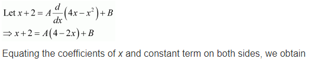
Ex 7.4 Class 12 Maths Question 21.
\(\frac { x+2 }{ \sqrt { { x }^{ 2 }+2x+3 } } \)
Solution:
Ex 7.4 Class 12 Maths Question 22.
\(\frac { x+3 }{ { x }^{ 2 }-2x-5 } \)
Solution:
Ex 7.4 Class 12 Maths Question 23.
\(\frac { 5x+3 }{ \sqrt { { x }^{ 2 }+4x+10 } } \)
Solution:

Ex 7.4 Class 12 Maths Question 24.
\(\int { \frac { dx }{ { x }^{ 2 }+2x+2 } equals } \)
(a) xtan-1(x+1)+c
(b) (x+1)tan-1x+c
(c) tan-1(x+1)+c
(d) tan-1x+c
Solution:
Ex 7.4 Class 12 Maths Question 25.
\(\int { \frac { dx }{ \sqrt { 9x-{ 4x }^{ 2 } } } equals } \)
(a) \(\frac { 1 }{ 9 } { sin }^{ -1 }\left( \frac { 9x-8 }{ 8 } \right) +c\)
(b) \(\frac { 1 }{ 2 } { sin }^{ -1 }\left( \frac { 8x-9 }{ 9 } \right) +c\)
(c) \(\frac { 1 }{ 3 } { sin }^{ -1 }\left( \frac { 9x-8 }{ 8 } \right) +c\)
(d) \({ sin }^{ -1 }\left( \frac { 9x-8 }{ 9 } \right) +c\)
Solution:
Move to Top → Class 12 Integrals Chapter 7
Integrals Class 12 Ex 7.5
Ex 7.5 Class 12 Maths Question 1.
\(\frac { x }{ (x+1)(x+2) }\)
Solution:
Ex 7.5 Class 12 Maths Question 2.
\(\frac { 1 }{ { x }^{ 2 }-9 } \)
Solution:
Ex 7.5 Class 12 Maths Question 3.
\(\frac { 3x-1 }{ (x-1)(x-2)(x-3) }\)
Solution:
Ex 7.5 Class 12 Maths Question 4.
\(\frac { x }{ (x-1)(x-2)(x-3) }\)
Solution:
Ex 7.5 Class 12 Maths Question 5.
\(\frac { 2x }{ { x }^{ 2 }+3x+2 } \)
Solution:
Ex 7.5 Class 12 Maths Question 6.
\(\frac { 1-{ x }^{ 2 } }{ x(1-2x) } \)
Solution:
Ex 7.5 Class 12 Maths Question 7.
\(\frac { x }{ \left( { x }^{ 2 }+1 \right) \left( x-1 \right) } \)
Solution:
Ex 7.5 Class 12 Maths Question 8.
\(\frac { x }{ { \left( x-1 \right) }^{ 2 }\left( x+2 \right) } \)
Solution:
Ex 7.5 Class 12 Maths Question 9.
\(\frac { 3x+5 }{ { x }^{ 3 }-{ x }^{ 2 }-x+1 } \)
Solution:
Ex 7.5 Class 12 Maths Question 10.
\(\frac { 2x-3 }{ ({ x }^{ 2 }-1)(2x+3) } \)
Solution:
Ex 7.5 Class 12 Maths Question 11.
\(\frac { 5x }{ (x-1)({ x }^{ 2 }-4) } \)
Solution:
Ex 7.5 Class 12 Maths Question 12.
\(\frac { { x }^{ 3 }+x+1 }{ { x }^{ 2 }-1 } \)
Solution:
Ex 7.5 Class 12 Maths Question 13.
\(\frac { 2 }{ (1-x)(1+{ x }^{ 2 }) } \)
Solution:
Ex 7.5 Class 12 Maths Question 14.
\(\frac { 3x-1 }{ { (x+2) }^{ 2 } } \)
Solution:
Ex 7.5 Class 12 Maths Question 15.
\(\frac { 1 }{ { x }^{ 4 }-1 } \)
Solution:

Ex 7.5 Class 12 Maths Question 16.
\(\frac { 1 }{ x({ x }^{ n }+1) } \)
[Hint : multiply numerator and denominator by xn-1 and put xn = t ]
Solution:
Ex 7.5 Class 12 Maths Question 17.
\(\frac { cosx }{ (1-sinx)(2-sinx) } \)
Solution:
Ex 7.5 Class 12 Maths Question 18.
\(\frac { \left( { x }^{ 2 }+1 \right) \left( { x }^{ 2 }+2 \right) }{ \left( { x }^{ 2 }+3 \right) \left( { x }^{ 2 }+4 \right) } \)
Solution:
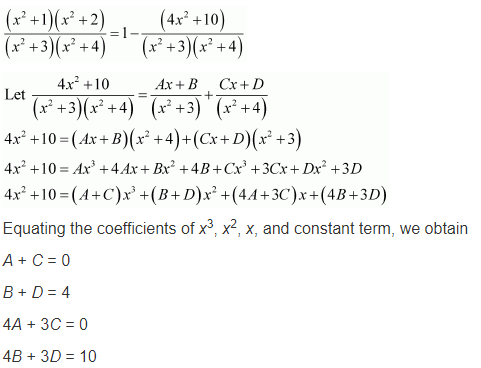
Ex 7.5 Class 12 Maths Question 19.
\(\frac { 2x }{ ({ x }^{ 2 }+1)({ x }^{ 2 }+3) } \)
Solution:
Ex 7.5 Class 12 Maths Question 20.
\(\frac { 1 }{ x({ x }^{ 4 }-1) } \)
Solution:
Ex 7.5 Class 12 Maths Question 21.
\(\frac { 1 }{ { e }^{ x }-1 } \)
Solution:
Ex 7.5 Class 12 Maths Question 22.
choose the correct answer in each of the following :
\(\int { \frac { xdx }{ (x-1)(x-2) } equals } \)
(a) \(log\left| \frac { { (x-1) }^{ 2 } }{ x-2 } \right| +c\)
(b) \(log\left| \frac { { (x-2) }^{ 2 } }{ x-1 } \right| +c\)
(c) \(log\left| \left( \frac { x-{ 1 }^{ 2 } }{ x-2 } \right) \right| +c\)
(d) log|(x-1)(x-2)|+c
Solution:
Ex 7.5 Class 12 Maths Question 23.
\(\int { \frac { dx }{ x({ x }^{ 2 }+1) } equals } \)
(a) \(log|x|-\frac { 1 }{ 2 } log({ x }^{ 2 }+1)+c \)
(b) \(log|x|+\frac { 1 }{ 2 } log({ x }^{ 2 }+1)+c \)
(c) \(-log|x|+\frac { 1 }{ 2 } log({ x }^{ 2 }+1)+c\)
(d) \(\frac { 1 }{ 2 } log|x|+log({ x }^{ 2 }+1)+c \)
Solution:

Move to Top → Class 12 Integrals Chapter 7
Integrals Class 12 Ex 7.6
Ex 7.6 Class 12 Maths Question 1.
x sinx
Solution:
Ex 7.6 Class 12 Maths Question 2.
x sin3x
Solution:
Ex 7.6 Class 12 Maths Question 3.
\({ x }^{ 2 }{ e }^{ x }\)
Solution:
Ex 7.6 Class 12 Maths Question 4.
x logx
Solution:
Ex 7.6 Class 12 Maths Question 5.
x log2x
Solution:
Ex 7.6 Class 12 Maths Question 6.
\({ x }^{ 2 }logx\)
Solution:
Ex 7.6 Class 12 Maths Question 7.
\(x\quad { sin }^{ -1 }x\)
Solution:
Ex 7.6 Class 12 Maths Question 8.
\(x\quad { tan }^{ -1 }x\)
Solution:
Ex 7.6 Class 12 Maths Question 9.
\(x\quad { cos }^{ -1 }x\)
Solution:
Ex 7.6 Class 12 Maths Question 10.
\({ (sin }^{ -1 }{ x })^{ 2 }\)
Solution:
Ex 7.6 Class 12 Maths Question 11.
\(\frac { x\quad { cos }^{ -1 }x }{ \sqrt { 1-{ x }^{ 2 } } } \)
Solution:
Ex 7.6 Class 12 Maths Question 12.
x sec²x
Solution:
Ex 7.6 Class 12 Maths Question 13.
\({ ta }n^{ -1 }x\)
Solution:
Ex 7.6 Class 12 Maths Question 14.
x(logx)²
Solution:
Ex 7.6 Class 12 Maths Question 15.
(x²+1)logx
Solution:
Ex 7.6 Class 12 Maths Question 16.
\({ e }^{ x }(sinx+cosx)\)
Solution:
Ex 7.6 Class 12 Maths Question 17.
\(\frac { { xe }^{ x } }{ { (1+x) }^{ 2 } } \)
Solution:
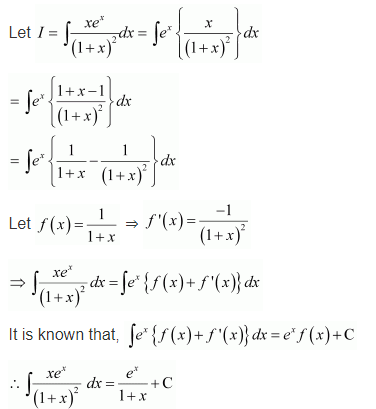
Ex 7.6 Class 12 Maths Question 18.
\(\frac { { e }^{ x }(1+sinx) }{ 1+cosx } \)
Solution:
Ex 7.6 Class 12 Maths Question 19.
\({ e }^{ x }\left( \frac { 1 }{ x } -\frac { 1 }{ { x }^{ 2 } } \right) \)
Solution:
Ex 7.6 Class 12 Maths Question 20.
\(\frac { { (x-2)e }^{ x } }{ { (x-1) }^{ 3 } } \)
Solution:
Ex 7.6 Class 12 Maths Question 21.
\({ e }^{ 2x }sinx\)
Solution:
Ex 7.6 Class 12 Maths Question 22.
\({ sin }^{ -1 }\left( \frac { 2x }{ 1+{ x }^{ 2 } } \right) \)
Solution:
Choose the correct answer in exercise 23 and 24
Ex 7.6 Class 12 Maths Question 23.
\(\int { { x }^{ 2 }{ e }^{ { x }^{ 3 } } } dx\quad equals\)
(a) \(\frac { 1 }{ 3 } { e }^{ { x }^{ 3 } }+c\)
(b) \(\frac { 1 }{ 3 } +{ e }^{ { x }^{ 2 } }+c\)
(c) \(\frac { 1 }{ 2 } { e }^{ { x }^{ 3 } }+c\)
(d) \(\frac { 1 }{ 2 } { e }^{ { x }^{ 2 } }+c\)
Solution:
Ex 7.6 Class 12 Maths Question 24.
\(\int { { e }^{ x }secx(1+tanx) } dx\quad equals\)
(a) \({ e }^{ x }cosx+c\)
(b) \({ e }^{ x }secx+c\)
(c) \({ e }^{ x }sinx+c\)
(d) \({ e }^{ x }tanx+c\)
Solution:
Move to Top → Class 12 Integrals Chapter 7
Class 12 Integrals Ex 7.7
Integral the function in exercises 1 to 9
Ex 7.7 Class 12 Maths Question 1.
\(\sqrt { 4-{ x }^{ 2 } } \)
Solution:
Ex 7.7 Class 12 Maths Question 2.
\(\sqrt { 1-{ 4x }^{ 2 } } \)
Solution:
Ex 7.7 Class 12 Maths Question 3.
\(\sqrt { { x }^{ 2 }+4x+6 } \)
Solution:
Ex 7.7 Class 12 Maths Question 4.
\(\sqrt { { x }^{ 2 }+4x+1 } \)
Solution:
Ex 7.7 Class 12 Maths Question 5.
\(\sqrt { 1-4x-{ x }^{ 2 } } \)
Solution:
Ex 7.7 Class 12 Maths Question 6.
\(\sqrt { { x }^{ 2 }+4x-5 } \)
Solution:
Ex 7.7 Class 12 Maths Question 7.
\(\sqrt { 1+3x-{ x }^{ 2 } } \)
Solution:
Ex 7.7 Class 12 Maths Question 8.
\(\sqrt { { x }^{ 2 }+3x } \)
Solution:
Ex 7.7 Class 12 Maths Question 9.
\(\sqrt { 1+\frac { { x }^{ 2 } }{ 9 } } \)
Solution:
Choose the correct answer in the Exercises 10 to 11:
Ex 7.7 Class 12 Maths Question 10.
\(\int { \sqrt { 1+{ x }^{ 2 } } } dx\quad is\quad equal\quad to\)
(a) \(\frac { x }{ 2 } \sqrt { 1+{ x }^{ 2 } } +\frac { 1 }{ 2 } log|x+\sqrt { 1+{ x }^{ 2 } } |+c\)
(b) \(\frac { 2 }{ 3 } { \left( 1+{ x }^{ 2 } \right) }^{ \frac { 3 }{ 2 } }+c\)
(c) \(\frac { 2 }{ 3 } x{ \left( 1+{ x }^{ 2 } \right) }^{ \frac { 3 }{ 2 } }+c\)
(d) \(\frac { { x }^{ 2 } }{ 2 } \sqrt { 1+{ x }^{ 2 } } +\frac { 1 }{ 2 } { x }^{ 2 }log\left| x+\sqrt { 1+{ x }^{ 2 } } \right| +c\)
Solution:
Ex 7.7 Class 12 Maths Question 11.
\(\int { \sqrt { { x }^{ 2 }-8x+7 } } dx\quad is\quad equal\quad to\)
Solution:
Move to Top → Class 12 Integrals Chapter 7
Class 12 Integrals Ex 7.8
Ex 7.8 Class 12 Maths Question 1.
\(\int _{ a }^{ b }{ x\quad dx } \)
Solution:
Ex 7.8 Class 12 Maths Question 2.
\(\int _{ 0 }^{ 5 }{ (x+1)dx } \)
Solution:
Ex 7.8 Class 12 Maths Question 3.
\(\int _{ 2 }^{ 3 }{ { x }^{ 2 } } dx\)
Solution:

Ex 7.8 Class 12 Maths Question 4.
\(\int _{ 1 }^{ 4 }{ ({ x }^{ 2 }-x) } dx\)
Solution:
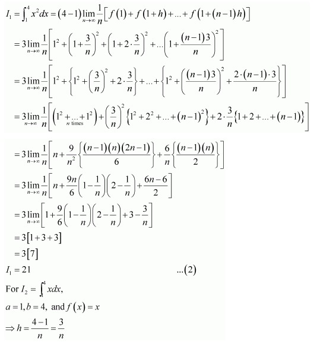
Ex 7.8 Class 12 Maths Question 5.
\(\int _{ -1 }^{ 1 }{ { e }^{ x } } dx\quad \)
Solution:
Ex 7.8 Class 12 Maths Question 6.
\(\int _{ 0 }^{ 4 }{ { (x+e }^{ 2x }) } dx\quad \)
Solution:
Move to Top → Class 12 Integrals Chapter 7
Class 12 Integrals Ex 7.9
Ex 7.9 Class 12 Maths Question 1.
\(\int _{ -1 }^{ 1 }{ { (x+1 }) } dx\quad \)
Solution:
Ex 7.9 Class 12 Maths Question 2.
\(\int _{ 2 }^{ 3 }{ \frac { 1 }{ x } dx } \)
Solution:
Ex 7.9 Class 12 Maths Question 3.
\(\int _{ 1 }^{ 2 }{ \left( { 4x }^{ 3 }-{ 5x }^{ 2 }+6x+9 \right) dx } \)
Solution:
Ex 7.9 Class 12 Maths Question 4.
\(\int _{ 0 }^{ \frac { \pi }{ 4 } }{ sin2x\quad dx } \)
Solution:
Ex 7.9 Class 12 Maths Question 5.
\(\int _{ 0 }^{ \frac { \pi }{ 2 } }{ cos2x\quad dx } \)
Solution:
Ex 7.9 Class 12 Maths Question 6.
\(\int _{ 4 }^{ 5 }{ { e }^{ x }dx } \)
Solution:
Ex 7.9 Class 12 Maths Question 7.
\(\int _{ 0 }^{ \frac { \pi }{ 4 } }{ tanx\quad dx } \)
Solution:
Ex 7.9 Class 12 Maths Question 8.
\(\int _{ \frac { \pi }{ 6 } }^{ \frac { \pi }{ 4 } }{ cosec\quad xdx } \)
Solution:
Ex 7.9 Class 12 Maths Question 9.
\(\int _{ 0 }^{ 1 }{ \frac { dx }{ \sqrt { 1-{ x }^{ 2 } } } } \)
Solution:
Ex 7.9 Class 12 Maths Question 10.
\(\int _{ 0 }^{ 1 }{ \frac { dx }{ 1+{ x }^{ 2 } } } \)
Solution:
Ex 7.9 Class 12 Maths Question 11.
\(\int _{ 2 }^{ 3 }{ \frac { dx }{ { x }^{ 2 }-1 } } \)
Solution:

Ex 7.9 Class 12 Maths Question 12.
\(\int _{ 0 }^{ \frac { \pi }{ 2 } }{ { cos }^{ 2 } } xdx\)
Solution:
Ex 7.9 Class 12 Maths Question 13.
\(\int _{ 2 }^{ 3 }{ \frac { x }{ { x }^{ 2 }+1 } } dx\)
Solution:
Ex 7.9 Class 12 Maths Question 14.
\(\int _{ 0 }^{ 1 }{ \frac { 2x+3 }{ { 5x }^{ 2 }+1 } dx } \)
Solution:
Ex 7.9 Class 12 Maths Question 15.
\(\int _{ 0 }^{ 1 }{ { xe }^{ { x }^{ 2 } }dx } \)
Solution:
Ex 7.9 Class 12 Maths Question 16.
\(\int _{ 1 }^{ 2 }{ \frac { { 5x }^{ 2 } }{ { x }^{ 2 }+4x+3 } dx } \)
Solution:
Ex 7.9 Class 12 Maths Question 17.
\(\int _{ 0 }^{ \frac { \pi }{ 4 } }{ \left( { 2sec }^{ 2 }x+{ x }^{ 3 }+2 \right) dx } \)
Solution:
Ex 7.9 Class 12 Maths Question 18.
\(\int _{ 0 }^{ \pi }{ \left( { sin }^{ 2 }\frac { x }{ 2 } -{ cos }^{ 2 }\frac { x }{ 2 } \right) } dx\)
Solution:
Ex 7.9 Class 12 Maths Question 19.
\(\int _{ 0 }^{ 2 }{ \frac { 6x+3 }{ { x }^{ 2 }+4 } } dx\)
Solution:
Ex 7.9 Class 12 Maths Question 20.
\(\int _{ 0 }^{ 1 }{ \left( { xe }^{ x }+sin\frac { \pi x }{ 4 } \right) dx } \)
Solution:
Ex 7.9 Class 12 Maths Question 21.
\(\int _{ 1 }^{ \sqrt { 3 } }{ \frac { dx }{ { 1+x }^{ 2 } } \quad equals } \)
(a) \(\frac { \pi }{ 3 } \)
(b) \(\frac { 2\pi }{ 3 } \)
(c) \(\frac { \pi }{ 6 } \)
(d) \(\frac { \pi }{ 12 } \)
Solution:
Ex 7.9 Class 12 Maths Question 22.
\(\int _{ 0 }^{ \frac { 2 }{ 3 } }{ \frac { dx }{ 4+{ 9x }^{ 2 } } equals } \)
(a) \(\frac { \pi }{ 6 }\)
(b) \(\frac { \pi }{ 12 }\)
(c) \(\frac { \pi }{ 24 }\)
(d) \(\frac { \pi }{ 4 }\)
Solution:
Move to Top → Class 12 Integrals Chapter 7
Integration Class 12 Ex 7.10
Ex 7.10 Class 12 Maths Question 1:
Solution:
Ex 7.10 Class 12 Maths Question 2:
Solution:
Ex 7.10 Class 12 Maths Question 3:
Solution:
Ex 7.10 Class 12 Maths Question 4:
Solution:
Ex 7.10 Class 12 Maths Question 5:
Solution:
Ex 7.10 Class 12 Maths Question 6:
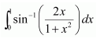
Solution:

Ex 7.10 Class 12 Maths Question 7:
Solution:
Ex 7.10 Class 12 Maths Question 8:
Solution:

Ex 7.10 Class 12 Maths Question 9:
Solution:
Ex 7.10 Class 12 Maths Question 10:
Solution:
Ex 7.10 Class 12 Maths Question 11:
Solution:
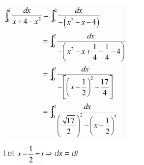
Ex 7.10 Class 12 Maths Question 12:
Solution:
Ex 7.10 Class 12 Maths Question 13:
Solution:
Ex 7.10 Class 12 Maths Question 14:
Solution:
Ex 7.10 Class 12 Maths Question 15:
Solution:
Ex 7.10 Class 12 Maths Question 16:
Solution:
Ex 7.10 Class 12 Maths Question 17:
Solution:
Ex 7.10 Class 12 Maths Question 18:
Solution:
Ex 7.10 Class 12 Maths Question 19:
Solution:
Ex 7.10 Class 12 Maths Question 20:
Solution:
Move to Top → Class 12 Integrals Chapter 7
NCERT Solutions for Class 2 Maths Integration Class 12 Ex 7.11
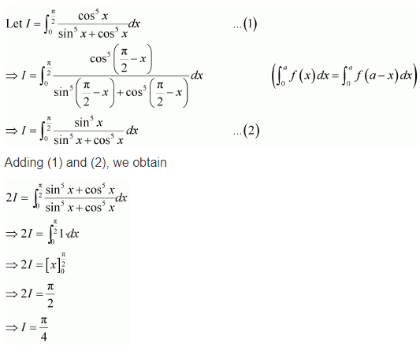

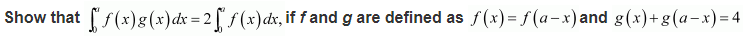
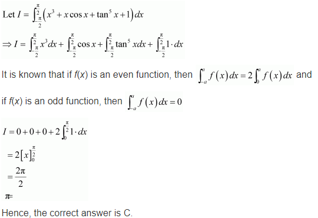

Move to Top → Class 12 Integrals Chapter 7
NCERT Solutions for Class 12 Maths Chapter 7 Integrals Miscellaneous Exercise
Miscellaneous Exercise Class 11 Maths Question 1:
Solution:

Miscellaneous Exercise Class 11 Maths Question 2:
Solution:
Miscellaneous Exercise Class 11 Maths Question 3:
Solution:
vMiscellaneous Exercise Class 11 Maths Question 4:
Solution:
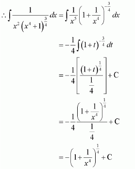
Miscellaneous Exercise Class 11 Maths Question 5:
Solution:
Miscellaneous Exercise Class 11 Maths Question 6:
Solution:
Miscellaneous Exercise Class 11 Maths Question 7:
Solution:
Miscellaneous Exercise Class 11 Maths Question 8:
Solution:
Miscellaneous Exercise Class 11 Maths Question 9:
Solution:
Miscellaneous Exercise Class 11 Maths Question 10:
Solution:
Miscellaneous Exercise Class 11 Maths Question 11:
Solution:
Miscellaneous Exercise Class 11 Maths Question 12:
Solution:
Miscellaneous Exercise Class 11 Maths Question 13:

Solution:
Miscellaneous Exercise Class 11 Maths Question 14:

Solution:
Miscellaneous Exercise Class 11 Maths Question 15:
Solution:
Miscellaneous Exercise Class 11 Maths Question 16:
Solution:
Miscellaneous Exercise Class 11 Maths Question 17:
Solution:
Miscellaneous Exercise Class 11 Maths Question 18:

Solution:
Miscellaneous Exercise Class 11 Maths Question 20:

Solution:
Miscellaneous Exercise Class 11 Maths Question 21:
Solution:
Miscellaneous Exercise Class 11 Maths Question 22:
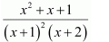
Solution:
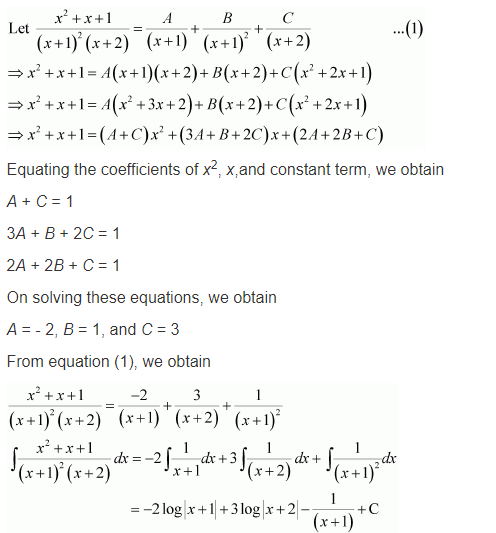
Miscellaneous Exercise Class 11 Maths Question 23:
Solution:
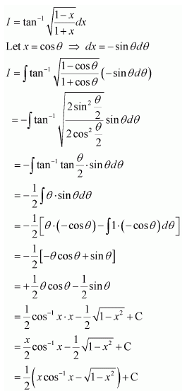
Miscellaneous Exercise Class 11 Maths Question 24:
Solution:
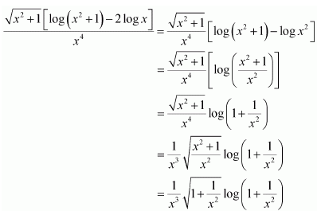
Miscellaneous Exercise Class 11 Maths Question 25:
Solution:
Miscellaneous Exercise Class 11 Maths Question 26:
Solution:
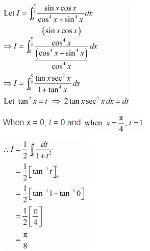
Miscellaneous Exercise Class 11 Maths Question 27:
Solution:
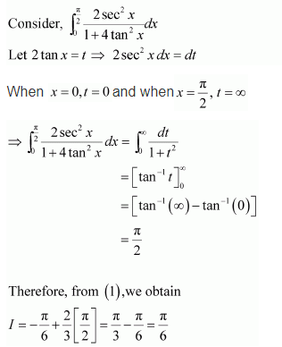
Miscellaneous Exercise Class 11 Maths Question 28:
Solution:
Miscellaneous Exercise Class 11 Maths Question 29:
Solution:
Miscellaneous Exercise Class 11 Maths Question 30:

Miscellaneous Exercise Class 11 Maths Question 31:
Solution:
Miscellaneous Exercise Class 11 Maths Question 32:
Solution:
Miscellaneous Exercise Class 11 Maths Question 33:
Solution:
Miscellaneous Exercise Class 11 Maths Question 34:
Solution:

Question 35:
Solution:

Miscellaneous Exercise Class 11 Maths Question 36:
Solution:
Miscellaneous Exercise Class 11 Maths Question 37:
Solution:
Miscellaneous Exercise Class 11 Maths Question 38:
Solution:
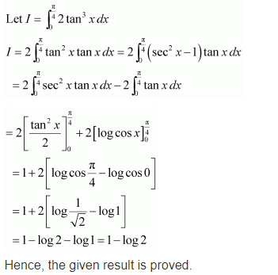
Miscellaneous Exercise Class 11 Maths Question 39:
Solution:
Miscellaneous Exercise Class 11 Maths Question 40:
Solution:
Miscellaneous Exercise Class 11 Maths Question 41:
Solution:
Miscellaneous Exercise Class 11 Maths Question 42:

Solution:

Miscellaneous Exercise Class 11 Maths Question 43:
Solution:
Miscellaneous Exercise Class 11 Maths Question 44:
Solution:
Move to Top → Class 12 Integrals Chapter 7
Integration Formulas


Move to Top → Class 12 Integrals Chapter 7
गणित कक्षा 12 समाकलन प्रश्नावली 7.1
निम्नलिखित फलनों के प्रतिअवकलज ( समाकलन) निरीक्षण विधि द्वारा ज्ञात कीजिए।
Ex 7.1 Class 11 Maths प्रश्न 1.
sin 2x
हल-
∫sin 2x dx
हम जानते हैं कि, \(\frac { d }{ dx }\) cos2x = -2 sin 2x

Ex 7.1 Class 11 Maths प्रश्न 2.
cos 3x
हल-
∫cos 3x dx
हम जानते हैं कि, \(\frac { d }{ dx }\) sin 3x = 3 cos 3x
Ex 7.1 Class 11 Maths प्रश्न 3.
e2x
हल-
∫e2x dx
हम जानते हैं कि,
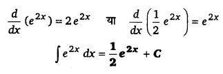
Ex 7.1 Class 11 Maths प्रश्न 4.
(ax + b)²
हल-
∫(ax + b)² dx
हम जानते हैं कि,
Ex 7.1 Class 11 Maths प्रश्न 5.
sin 2x – 4e3x
हल-
∫(sin 2x -4e3x) dx = ∫sin 2x dx – 4∫e3x …(1)
निम्नलिखित समाकलनों को ज्ञात कीजिए।
Ex 7.1 Class 11 Maths प्रश्न 6.
∫(4e3x + 1) dx
हल-
∫(4e3x + 1) dx = 4∫e3xdx + ∫1 dx
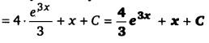
Ex 7.1 Class 11 Maths प्रश्न 7.
हल-
Ex 7.1 Class 11 Maths प्रश्न 8.
∫(ax² + bx + c) dx
हल-
∫(ax² + bx + c) dx = a∫x²dx + b∫xdx + c∫1 dx
Ex 7.1 Class 11 Maths प्रश्न 9.
∫(2x² + ex) dx
हल-
∫(2x² + ex) dx = 2∫x² dx + ∫ex dx
Ex 7.1 Class 11 Maths प्रश्न 10.
हल-

Ex 7.1 Class 11 Maths प्रश्न 11.
हल-

Ex 7.1 Class 11 Maths प्रश्न 12.
हल-

Ex 7.1 Class 11 Maths प्रश्न 13.
हल-
Ex 7.1 Class 11 Maths प्रश्न 14.
∫(1-x)√x dx
हल-
∫(1-x)√x dx
=∫(√x-x√x)dx
Ex 7.1 Class 11 Maths प्रश्न 15.
∫√x(3x² + 2x + 3)dx
हल-
∫√x(3x² + 2x + 3)dx

Ex 7.1 Class 11 Maths प्रश्न 16.
∫(2x – 3cosx + ex)dx
हल-
∫(2x – 3cosx + ex)dx

प्रश्न 17.
∫(2x² – 3sinx + 5√x)dx
हल-
∫(2x² – 3sinx + 5√x)dx
= 2∫x² dx – 3 ∫ sinx dx + 5∫√x dx
Ex 7.1 Class 11 Maths प्रश्न 18.
∫secx (sec x + tan x) dx
हल-
∫sec x (sec x + tan x) dx
= ∫(sec² x + sec x tan x) dx
= ∫(sec² x dx
= ∫sec x tan x dx
tan x + sec x + C
Ex 7.1 Class 11 Maths प्रश्न 19.
हल-
Ex 7.1 Class 11 Maths प्रश्न 20.
हल-
प्रश्न 21 एवं 22 में सही उत्तर का चयन कीजिए
Ex 7.1 Class 11 Maths प्रश्न 21
हल-
Ex 7.1 Class 11 Maths प्रश्न 22
हल-

Move to Top → Class 12 Integrals Chapter 7
Class 12 Maths NCERT Solutions
- Chapter 1 Relations and Functions
- Chapter 2 Inverse Trigonometric Functions
- Chapter 3 Matrices
- Chapter 4 Determinants
- Chapter 5 Continuity and Differentiability
- Chapter 6 Application of Derivatives
- Chapter 7 Integrals Ex 7.1
- Chapter 8 Application of Integrals
- Chapter 9 Differential Equations
- Chapter 10 Vector Algebra
- Chapter 11 Three Dimensional Geometry
- Chapter 12 Linear Programming
- Chapter 13 Probability Ex 13.1
Updated NCERT Solutions for Class 12 Maths for 2019 Exams.